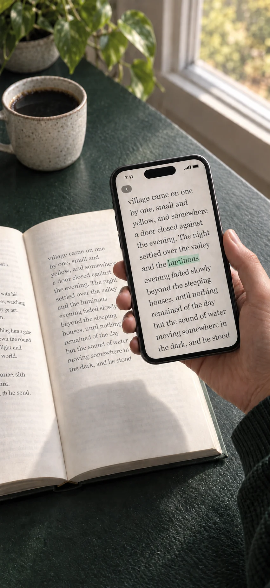
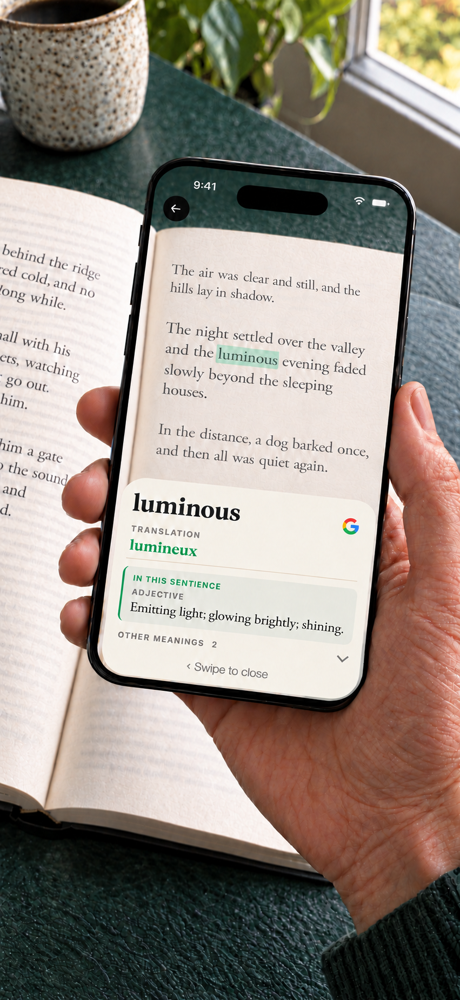

Point at an unfamiliar word.
Hold the small green ring over the word. A highlight sweeps across it as it’s read.
A little companion for paper books
Point your iPhone at an unfamiliar word in your paper book. Get the meaning, then keep reading.
For iPhone · iOS 17 or later · $1.99 USD

A moment of curiosity
No typing. No switching between apps. Just a quick glance, then back to your book.
Hold the small green ring over the word. A highlight sweeps across it as it’s read.
The dictionary definition appears. Read it at a glance, or explore other meanings when you need to.
Swipe the definition away and return to your sentence. The camera is ready for the next unfamiliar word. Touch and hold a word in a definition to look it up, copy it or search Google. Return to the original entry when you are done. You can also search Google directly from a scanned word.
Made for the way you read
Read in the language of your book. Download only the dictionaries you need.
When a verified sentence match is ready, see that dictionary meaning first.
How meanings are chosen ↓Installed dictionaries and translation packs work offline, whether you’re on a train or in your favourite reading corner.
All available dictionaries and translation packs are included. No subscription or in-app purchases.
A little more understanding
When a verified sentence match is ready, its dictionary meaning appears first. Other meanings stay within reach, ready to expand.
Sentence matching requires a supported iPhone with Apple Intelligence available on iOS 26 or later. Otherwise, the first dictionary meaning appears.
Plurals and conjugations can lead to their dictionary headwords, so the word on the page can take you to the entry you need.
Reading in English? Add a word translation in your chosen language alongside the English definition. Download its pack once, then use it offline.
Word equivalents vary by word and language. These are individual words, rather than full-page translations.

Choose the language of your book
Choose from 24 book languages. English definitions are built in; the other dictionaries download when you need them. Select your book’s language, then tap Start reading.
Reading an English book? Choose from 24 separate word translation packs: the 23 downloadable book languages above, plus Greek. Translate words from all 23 supported non-English book languages into English. English definitions are optional where compatible translation models are available.
26 interface languages. Tap the gear on the home screen, then Settings → App language. It follows your phone language by default; unsupported phone languages use English. This does not change the book language.
Greek has an interface and English-word translations, but is not a book language. Kurdish covers Latin-script Kurmanji, not Sorani; Malay covers Latin-script Rumi. Chinese supports Simplified and Traditional text. Coverage varies by word, form and language.
The essentials
Installed dictionaries and translation packs work offline, whether you’re on a train or in your favourite reading corner.
Google search is optional, opens your browser and requires internet. Only when you choose it is the search text sent to Google. Camera images remain on your iPhone. No account, advertising, analytics or tracking.
All available dictionaries and translation packs are included. No subscription or in-app purchases.
Yes. English definitions are built in. Download any additional dictionaries or translation packs while you’re online; once installed, they work without a connection. Checking the language catalog also needs internet access.
The 24 book languages are listed above. English is built in; the other 23 dictionaries download separately. Choose the language of your book before reading. Chinese supports Simplified and Traditional text; Kurdish covers Latin-script Kurmanji and Malay covers Rumi.
Word translations appear beside English definitions. On iOS 18 or later, you can also opt into translated definitions for English books in 19 supported languages after downloading the required files. Translate words from all 23 supported non-English book languages into English. English definitions are optional where compatible translation models are available.
When a verified sentence match is ready, its dictionary meaning appears first. Other meanings stay within reach, ready to expand. Sentence matching requires a supported iPhone with Apple Intelligence available on iOS 26 or later. Otherwise, the first dictionary meaning appears.
Booktionary requires an iPhone running iOS 17 or later. Good light and a clear printed page help the camera recognise words.
Google search is optional, opens your browser and requires internet. Only when you choose it is the search text sent to Google. Camera images remain on your iPhone. There are no accounts, ads or analytics. Dictionary downloads contact the content host, which can receive connection details such as your IP address.
Questions, bugs, or a word it read wrong: fredddv@hotmail.com
For the love of paper books
One-time purchase. No subscription. · For iPhone · iOS 17 or later